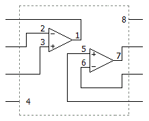
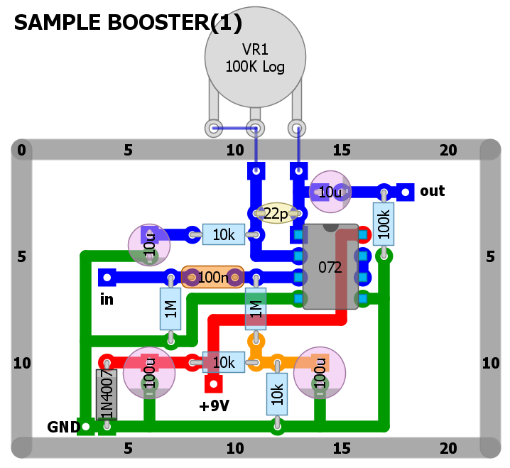
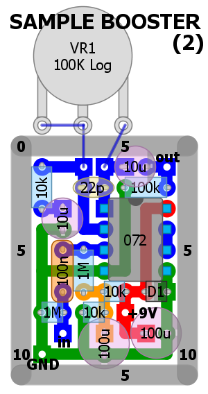

私のエフェクター自作方法【2++】部品レイアウトの描き方
2008年11月21日 カテゴリー：私のエフェクター自作方法
「【2+】回路図の見方」で出てきたサンプルブースターの部品レイアウト図を描きます。

※TL072等のデュアルオペアンプの中身は下図です。

私はレイアウト作成にDIY Layout Creator 3.xを使っています（DIY Layout Creator 3.x 非公式日本語簡易マニュアルはこちら）。もちろん手書きでも大丈夫です。とりあえず回路図どおりに部品を配置してみます。アースを周囲にめぐらせるとやりやすいと思います。幅はMXRサイズのケースに合わせて横21穴にしました。

単純すぎて特に解説するようなところがありません。気をつけるのはコンデンサの寸法ぐらいだと思います。取り付ける方向がある部品や線材を取り付けるところを四角いマークにすることがありますが、特に決まりではありません。私は内部配線がしやすいようにINPUTとGNDを左側、+9Vを中央、OUTPUTを右側に配置することが多いです。
小さいケースを使うことを想定して、狭いスペースに詰め込んでみました。できるだけ斜めの配線はしないようにしています。

一応載せましたが、特に面白くも何ともないですね……
レイアウト位置を特に気にする必要があるのは、コーラスやフェイザー等の揺れの周期を決めるLFOという回路です。ノイズの原因になるため、ポットの配線が最短になるようにします。
私は使ったことがありませんが、回路図からプリント基板レイアウトを自動作成してくれるソフトがあります。回路図を自分で描く場合はそちらを活用するのがいいのかなと思っています。
（2016年9月更新）